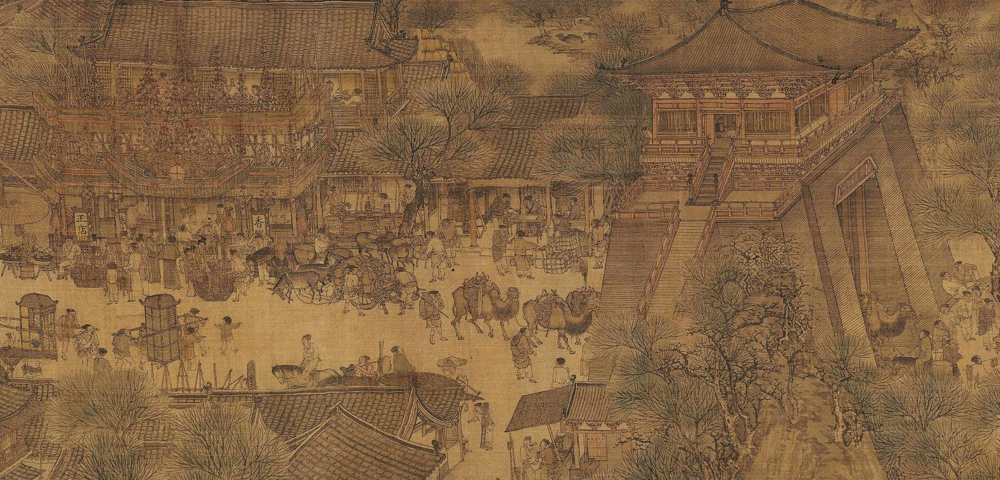
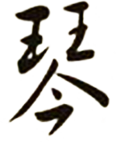
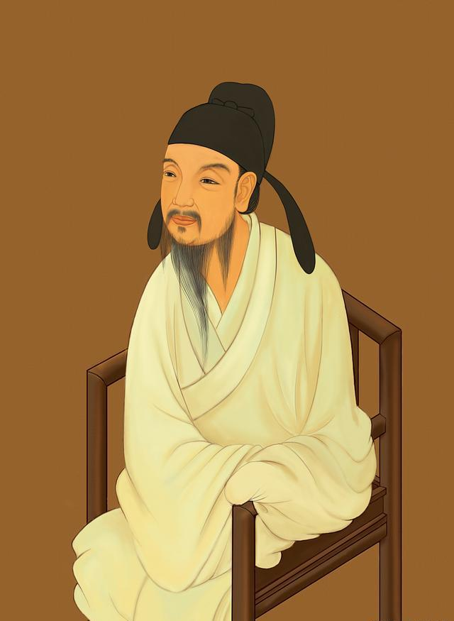

首页
天地之声·琴
阴阳之道·棋
心画之境·书
造化之工·画
历史脉络
传世名曲
琴学思想
琴韵心声
历史脉络
传世名曲
琴学思想
字体演变
书法体系
笔墨密码
书道新解
历史脉络


吴清源
原名吴泉，1914年出生于福建省福州市的名门望族。他是著名的围棋大师， 被誉为“围棋神童”
14岁时便东渡日本开始职业生涯。吴清源在1933年以19岁之龄运用自创 的“新布局”对阵本因坊秀哉，开创了围棋史上的新篇章。他曾加入日本国 籍，并在围棋界享有极高的声誉，被称为“昭和棋圣”。
吴清源不仅在围棋技艺上有卓越贡献， 还致力于推动围棋的国际化和中国围棋的发展。
欧阳询
原名吴泉，1914年出生于福建省福州市的名门望族。他是著名的围棋大师， 被誉为“围棋神童”
14岁时便东渡日本开始职业生涯。吴清源在1933年以19岁之龄运用自创 的“新布局”对阵本因坊秀哉，开创了围棋史上的新篇章。他曾加入日本国 籍，并在围棋界享有极高的声誉，被称为“昭和棋圣”。
吴清源不仅在围棋技艺上有卓越贡献， 还致力于推动围棋的国际化和中国围棋的发展。

嵇康
原名吴泉，1914年出生于福建省福州市的名门望族。他是著名的围棋大师， 被誉为“围棋神童”
14岁时便东渡日本开始职业生涯。吴清源在1933年以19岁之龄运用自创 的“新布局”对阵本因坊秀哉，开创了围棋史上的新篇章。他曾加入日本国 籍，并在围棋界享有极高的声誉，被称为“昭和棋圣”。
吴清源不仅在围棋技艺上有卓越贡献， 还致力于推动围棋的国际化和中国围棋的发展。
张择端
原名吴泉，1914年出生于福建省福州市的名门望族。他是著名的围棋大师， 被誉为“围棋神童”
14岁时便东渡日本开始职业生涯。吴清源在1933年以19岁之龄运用自创 的“新布局”对阵本因坊秀哉，开创了围棋史上的新篇章。他曾加入日本国 籍，并在围棋界享有极高的声誉，被称为“昭和棋圣”。
吴清源不仅在围棋技艺上有卓越贡献， 还致力于推动围棋的国际化和中国围棋的发展。
×
首页
首页
参观
开放时间
导览地图